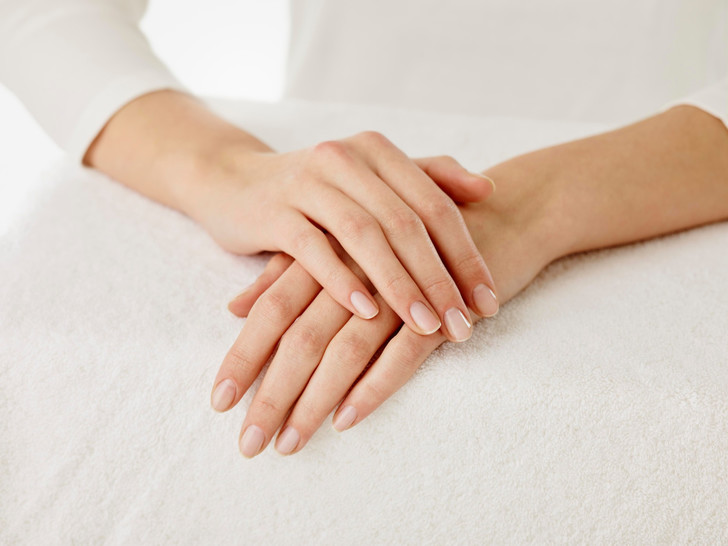

Болезни
Здоровая ногтевая пластина имеет ровный розовато-бежевый цвет, ровную линию улыбки, кожа не воспалена, ногтевая пластина без травм.
Лейконихия-белые пятна, причиной их появления может послужить стресс, смена климата. Синегнойная палочка-псевдомония. Имеет сине-зелёный цвет. Койлонихия-вмятина на пластине в виде ложки. Онихолизис-отслоение ногтя от ногтевого ложа. Онихошизис-массовые расслоения ногтевой пластины. Онихорексис-заболевание сосудов. Панариций-воспаление около ногтевого валика. Бородавки-вызваны вирусом папилломы человека.
